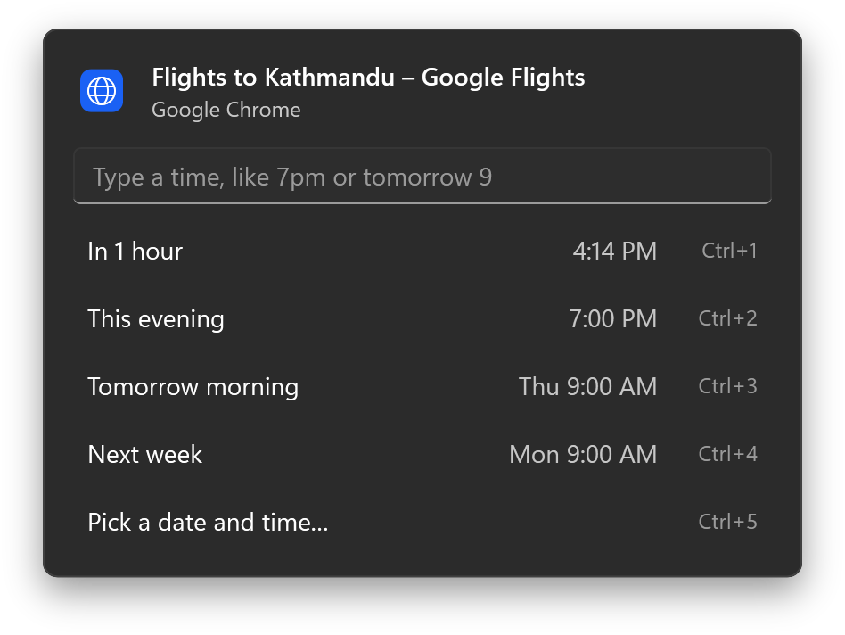
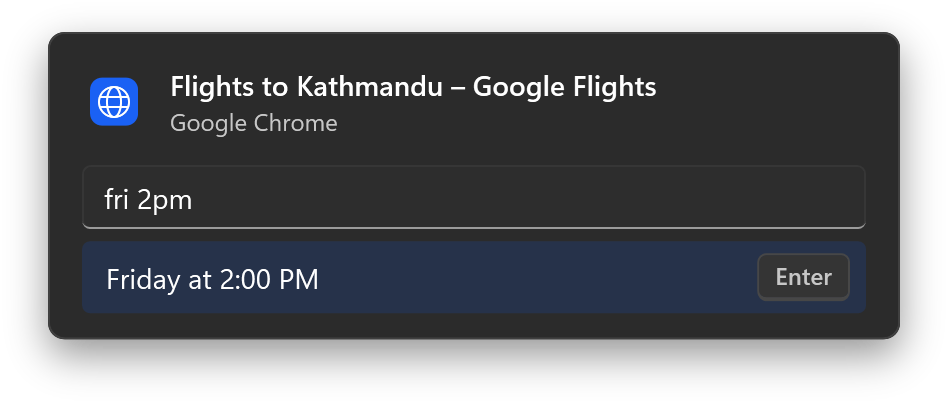
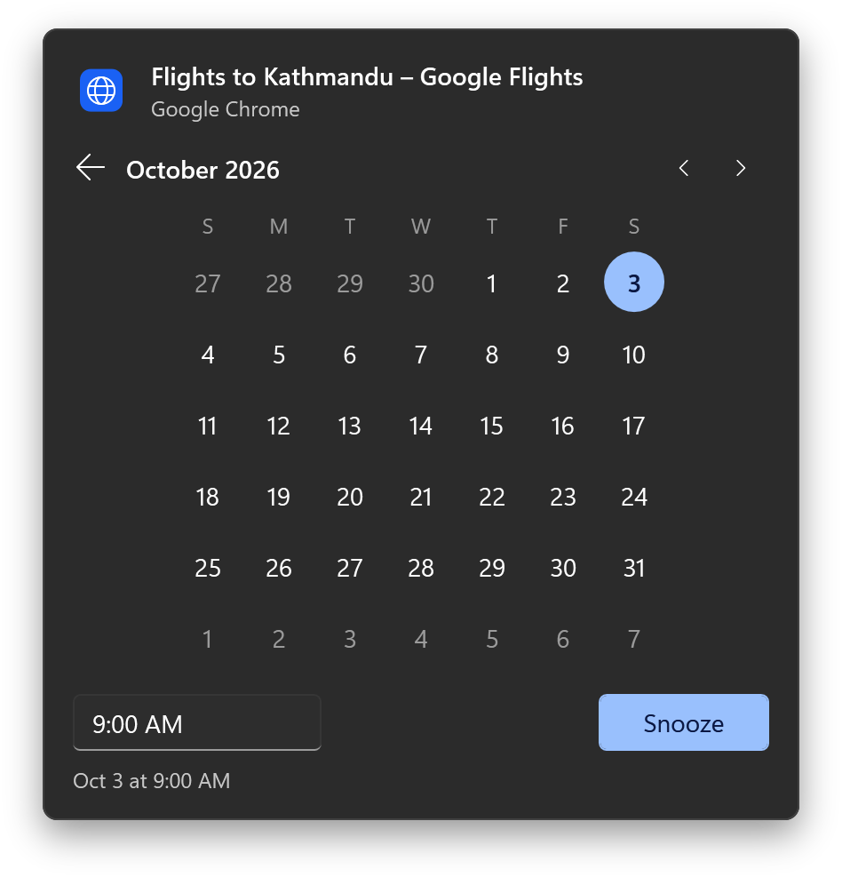
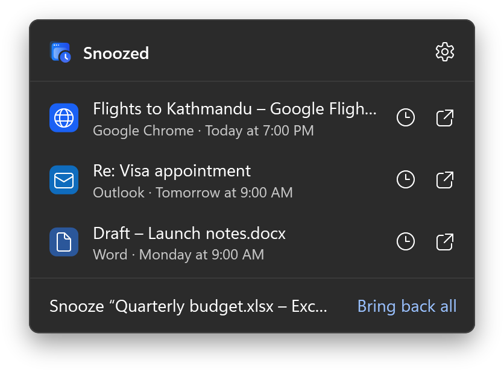
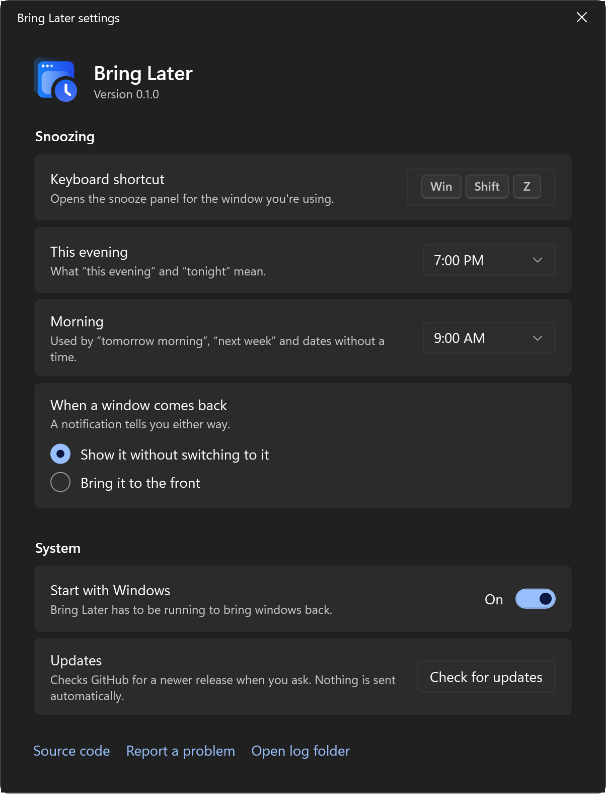
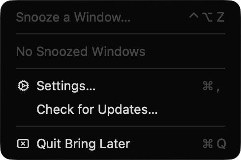

Windows
Windows 11 · Intel, AMD or Arm
- Run the downloaded
.exe. Bring Later lives in the notification area; nothing is installed. - If SmartScreen appears, select More info, then Run anyway.
- Press Win Shift Z on any window.
Press a shortcut on any window and pick a time. It disappears, then comes back exactly where it was, when you said it would.
Free and open source. Windows 11 and macOS 14 or later.
In an hour, this evening, tomorrow morning, next week. Press Ctrl+1 to Ctrl+5, use the arrow keys, or click. Times follow your clock settings, and you decide what “evening” and “morning” mean.

Bring Later reads the time as you type and shows exactly when the window will come back before you press Enter.


Click Bring Later in the notification area to see what’s waiting and when it’s due. Bring a window back early, or give it a different time.

A hidden window with no way back would be worse than clutter, so every path ends with your windows on screen.
Change the shortcut, what “this evening” means, and whether returning windows come to the front or wait quietly behind what you’re doing. Light and dark follow Windows.

No installer and no account. Bring Later isn’t code-signed yet, so your system asks once before the first launch.
Windows 11 · Intel, AMD or Arm
.exe. Bring Later lives in the notification area; nothing is installed.macOS 14 or later · Apple silicon and Intel

No account, no analytics, and no network requests unless you choose Check for updates. Window titles stay on your computer. The code is on GitHub under the MIT License, so you don’t have to take our word for it.
Read the source on GitHub